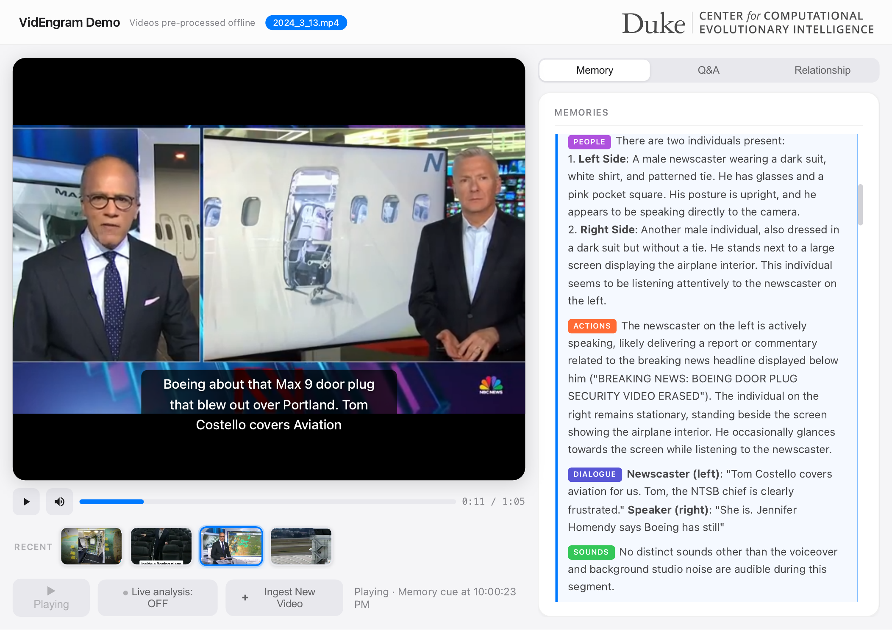
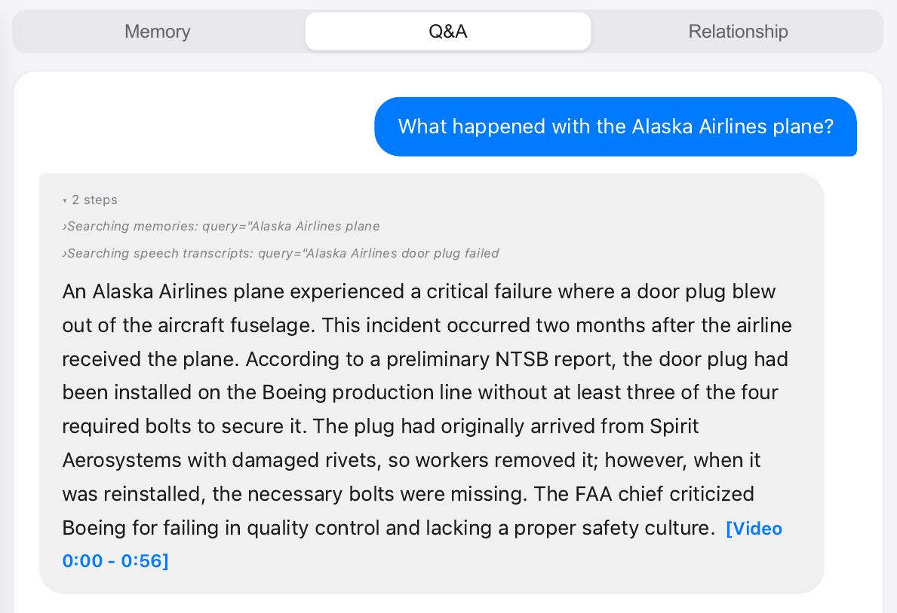
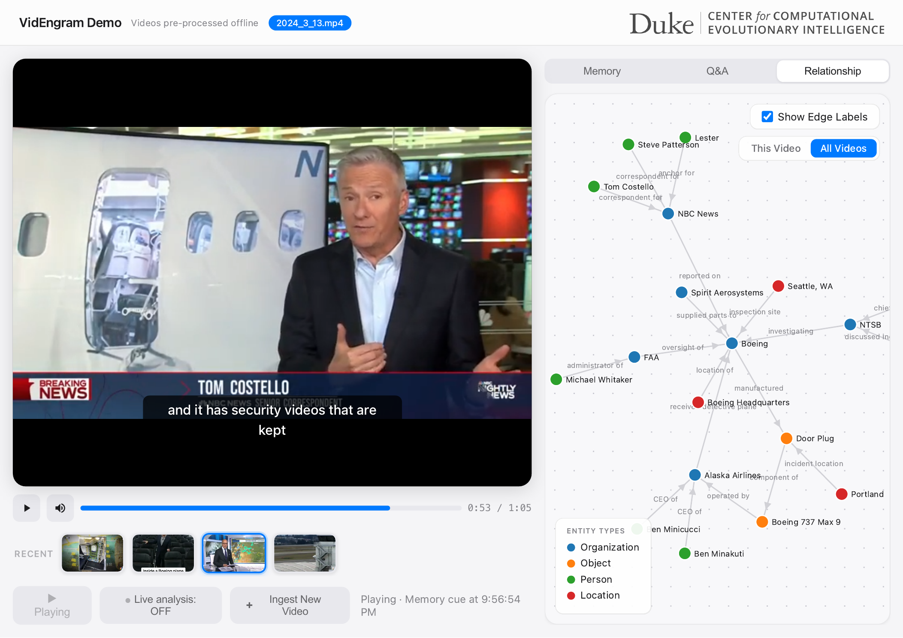

Memory Panel
Inspect the eleven-field structured-caption feed beside time-synced playback, making ingestion visible before any question is asked.
EMNLP 2026 System Demonstrations
VidEngram builds a persistent, inspectable memory for long videos once, then answers later questions with an agentic text-only retrieval loop grounded in timestamped evidence.
Long-video question answering is wasteful and lossy when a multimodal model must re-encode the same video for every query: context limits force sparse sampling or truncation, and no reusable representation remains for later questions. VidEngram builds a persistent hierarchical memory once at ingest and answers later questions from that memory.
VidEngram captions video and audio jointly with Qwen2.5-Omni, consolidates segment memories into episode and entity layers, and uses a text-only ReAct planner with specialized retrieval tools to produce grounded answers. The interface makes this process inspectable through memory formation, retrieval traces, cited evidence in the video player, and entity relationships.
The walkthrough shows the web interface, memory formation, timestamp-grounded QA, and entity-relationship exploration.
The hosted demo runs VidEngram on a small set of pre-ingested videos. You can browse the memory timeline, inspect retrieval traces, ask video-grounded questions, and jump from each answer to its cited timestamp evidence.

Inspect the eleven-field structured-caption feed beside time-synced playback, making ingestion visible before any question is asked.

Follow the retrieval trace as VidEngram combines memory search with speech search, then verify the cited evidence in the video player.

Explore the entity layer as a labeled graph; selecting a node opens its profile, appearance timeline, and source scenes.
@misc{videngram2026,
author = {Cheng, Zinuo and Lin, Yueqian and Wang, Zhongxi and Li, Hai and Chen, Yiran},
title = {VidEngram: Agentic Long-Term Video Understanding via Structured Hierarchical Memory},
year = {2026}
}